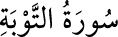

9- TEVBE SÛRESİ
Tevbe sûresi, 129 âyettir. 128 ve 129. âyetler Mekke’de, diğerleri Medine’de
inmiştir. 104. âyet tevbe ile ilgili olduğu için sûreye bu isim verilmiştir. Sûrenin
bundan başka birçok ismi olup en meşhuru Berâe’dir.
Bu sûrenin Enfâl sûresi’nin devamı veya başlı başına bir sûre olup olmadığı
hakkında ihtilâf olduğu için başında Besmele yazılmamıştır.